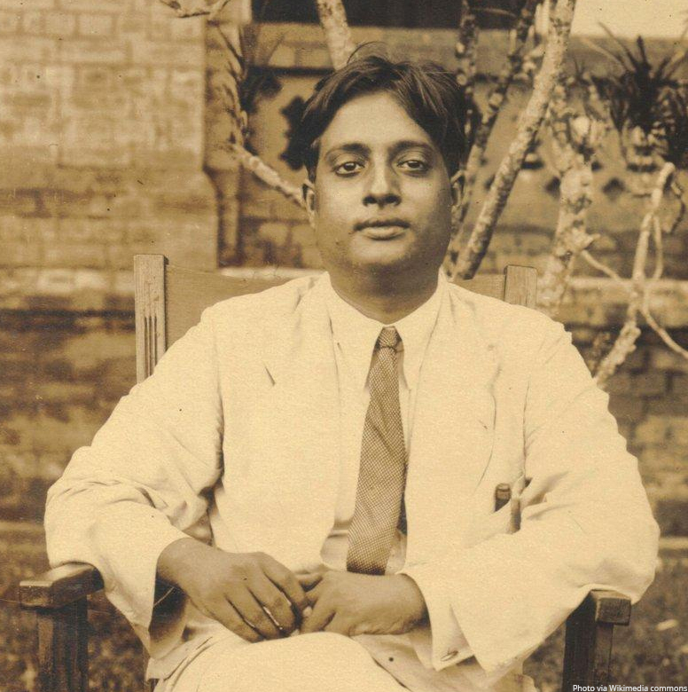
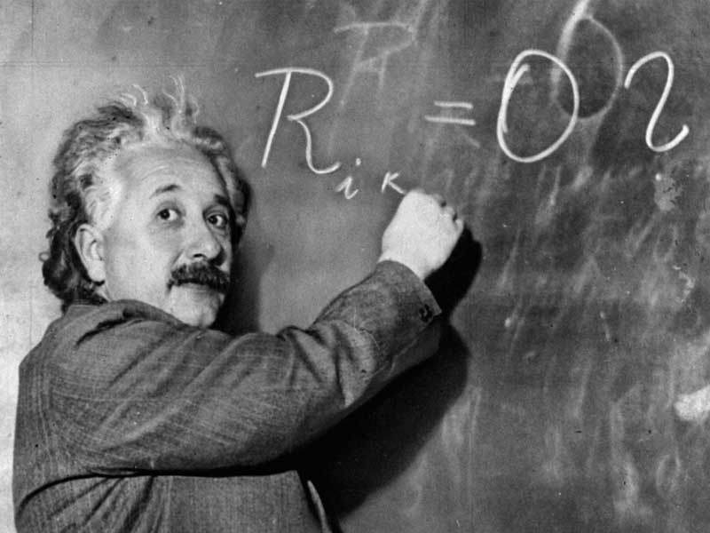
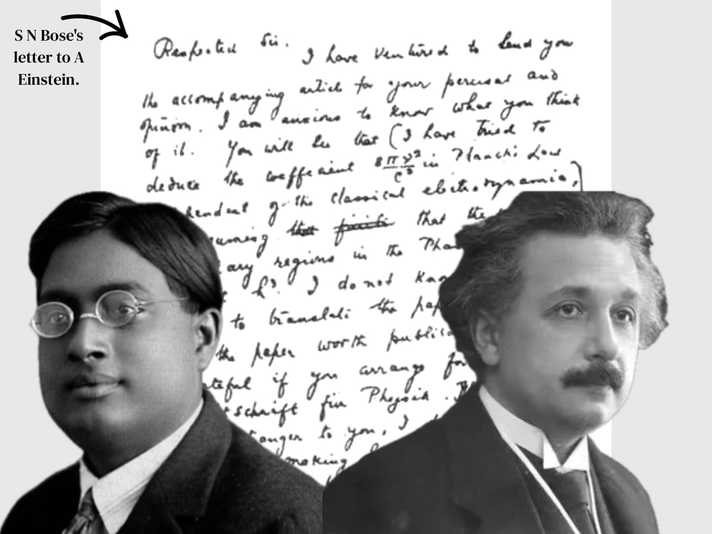

Un problema con la luz
A principios de la década de 1920, la mecánica cuántica era un terreno pantanoso. Max Planck había demostrado que la luz se emitía en "cuantos" de energía, y Albert Einstein reafirmó que la luz misma viajaba en paquetes individuales (los fotones). Pero existía un problema matemático fundamental que incomodaba profundamente a los físicos experimentales y teóricos de Europa.
La ley de radiación del cuerpo negro de Planck funcionaba perfectamente, pero no existía una forma rigurosa de derivarla matemáticamente sin recurrir a trucos conceptuales o mezclar la nueva física cuántica con las viejas reglas del electromagnetismo clásico de Maxwell. Era como intentar construir un motor moderno usando piezas de un carruaje romano.
El profesor en Dhaka


A miles de kilómetros de los sofisticados laboratorios y salones de Europa continental, se encontraba la Universidad de Dhaka (en ese entonces India británica, hoy Bangladesh). Allí, un joven profesor de física llamado Satyendra Nath Bose dictaba sus clases intentando explicar a sus alumnos las deficiencias de las deducciones matemáticas de Planck y Einstein.
En 1924, mientras intentaba demostrar por qué las matemáticas existentes no funcionaban, Bose cometió lo que en estadística clásica se consideraría un error. En lugar de contar a las partículas como objetos distinguibles (como si fueran canicas numeradas A y B), asumió intrínsecamente que los fotones individuales eran absolutamente indistinguibles entre sí.
En el lanzamiento de dos monedas (estadística de Maxwell-Boltzmann), tienes cuatro resultados posibles: Cara-Cara, Ceca-Ceca, Cara-Ceca y Ceca-Cara. Cada uno tiene una probabilidad de 1/4.
Bose postuló que en la escala cuántica de partículas de luz, las monedas pierden su identidad. No hay diferencia entre lanzar primero Cara y después Ceca, o al revés. El universo solo registra: "Dos caras, dos cecas, o una de cada una". Hay solo tres macroestados, y cada uno tiene probabilidad 1/3. Esto cambia drásticamente toda la matemática física.
El Gas de Fotones
Partículas de luz concebidas como un gas ideal indistinguible dentro de una cavidad térmica.
Mágicamente, aplicando esta nueva forma de contar estadísticas, la ley de Planck emergía a la perfección de las ecuaciones cuánticas, sin necesidad de usar física clásica alguna. Bose había resuelto el rompecabezas. Escribió su hallazgo en un papel llamado "La ley de Planck y la hipótesis del cuanto de luz".
Lo envió para su publicación a la prestigiosa revista británica Philosophical Magazine. La respuesta del comité editorial europeo fue rotunda: el artículo fue rechazado.
La carta que rompió fronteras
Bose se encontraba frustrado, pero convencido de su matemáticas deductivas. La academia occidental ignoraba sistemáticamente los manuscritos que llegaban de científicos de las colonias o alejados de los epicentros de poder (Múnich, Copenhague, Cambridge).

"Estimado señor, he tenido el atrevimiento de enviarle el artículo adjunto para su consideración e intercambio de opiniones. [...] Yo no sabría lo suficiente en alemán para la traducción del material... Estaré tan agradecido como encantado de que logre publicarlo en Zeitschrift für Physik..."
— Fragmento de la carta de S. N. Bose a Albert Einstein¿Qué hizo la superestrella mundial de la física al recibir una carta en inglés, no solicitada, escrita por un casi desconocido profesor indio? Einstein leyó el artículo. Inmediatamente comprendió que Bose no había cometido un error de despiste: había concebido, orgánicamente, la fundación estadística de la mecánica cuántica.
Einstein tradujo personalmente el artículo de Bose del inglés al alemán y lo envió a la revista científica por él. Para garantizar la adopción, adjuntó una nota personal afirmando que consideraba el trabajo de Bose como "un paso adelante extremadamente importante".
El nacimiento de los Bosones
La historia no terminó ahí. Einstein comenzó a extrapolar las matemáticas que Bose le había enviado. Si la estadística de Bose funcionaba con fotones (partículas de luz sin masa que no ocupan espacio de forma exclusiva), ¿qué pasaría si aplicábamos esas mismas reglas a átomos con masa flotando en un gas ideal a temperaturas próximas al cero absoluto?
Einstein calculó que, forzadas a estar a temperaturas extremadamente frías, las partículas perderían su individualidad termodinámica. Ya no se comportarían como un puñado de canicas saltando independientemente, sino que todas colapsarían al mismo nivel base de energía mecánica, conformando un único y macroscópico superátomo cuántico u onda de estado.
Este extraño comportamiento físico propuso un quinto estado de la materia. Ya no un sólido, ni un gas, ni un plasma. Ahora se llama Condensado de Bose-Einstein. Einstein predijo esto en 1925, guiado puramente por la matemática formulada por el joven científico indio.
Tuvieron que pasar setenta años, en 1995, para que los experimentos modernos contaran con tecnología de refrigeración por láser suficiente como para enfriar átomos de rubidio cerca del cero absoluto y confirmar empíricamente la existencia física genuina del Condensado de Bose-Einstein en un laboratorio.
A las partículas que obedecen estas reglas de indistinguibilidad se las nombró "Bosones" en honor al profesor hindú. De ahí el famoso "Bosón de Higgs".
— El legado InmortalLas barreras de la Ciencia
El proyecto histórico de la colaboración Bose-Einstein abre enormes debates filosóficos para ustedes en clase. Por un lado, nos enfrenta al sesgo sistemático de publicadores que validan o rechazan textos puramente en base al "capital cultural" (provenir de un imperio europeo occidental vs. una nación colonizada en Asia).
Por otro lado, nos muestra a la ciencia en su fase más utópica: la de un conocimiento puramente humano. Einstein representaba la cúspide académica mundial, y sin embargo operó en franca paridad empírica; traduciendo desinteresadamente la genialidad ajena, compartiendo el crédito y demostrando que la naturaleza es universal.